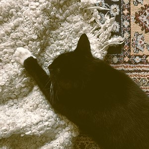

Kissakahvila Minttu
Pysähdyspaikkasi arjen kiireiltä.
Meistä
Minttu on vuonna 2024 perustettu kissakahvila, jossa pääset nauttimaan
käsintehdyistä leivonnaisista pörröisten seuralaisten kanssa!
Kaipasitpa sitten herkutteluhetkeä, hieman erilaista työskentelyseuraa tai vain lepohetkeä arjen keskelle,
löydät sen meiltä, lyhyen kävelymatkan päässä Mall of Triplasta.
Koti kissalle?
Teemme säännöllisesti yhteistyötä eläinsuojeluyhdistysten kanssa, joten jos olet kiinnostunut adoptoimaan kissan tai toimimaan sijaiskotina kissoillemme, tule juttelemaan henkilökuntamme kanssa - he auttavat sinut alkuun.